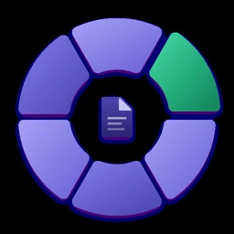

01
Alléger une photo pour un formulaire
Ta photo est trop lourde pour un site d'inscription : glisse-la sur WEBP ou sur « JPG 70 % » et la version légère apparaît à côté.
photo.jpg→Donut→photo.webp

Le convertisseur qu'on utilise en glissant : tu lâches ton fichier sur un format, c'est converti. Le mode d'emploi en français.

Filee est un logiciel à installer sur ton ordinateur. Tu maintiens Ctrl (Option sur Mac) en glissant un ou plusieurs fichiers : un donut de formats s'ouvre sous ta souris, avec seulement les formats qui ont du sens pour ces fichiers. Tu lâches sur le format voulu et le résultat est enregistré à côté de l'original. Trois façons de l'installer :
Le support principal. Par le Microsoft Store, par la commande winget install KnifeLemon.Filee, ou avec l'installateur (ou la version portable en ZIP) de la page des versions sur GitHub. Version ARM disponible.
Support principalTu décompresses le paquet x64 ou ARM64 et tu lances ./install.sh, sans droits administrateur (Python 3 requis). Sous Wayland, passe par la zone de dépôt ou le clic droit du gestionnaire de fichiers.
Pris en chargeDisponible en préversion : fichier .dmg ou paquet avec ./install.sh. Les paquets ne sont pas notariés par Apple, macOS peut donc afficher un avertissement à l'ouverture.
PréversionTa photo est trop lourde pour un site d'inscription : glisse-la sur WEBP ou sur « JPG 70 % » et la version légère apparaît à côté.
Un CV ou une attestation à envoyer : lâche le .docx sur PDF, sans ouvrir Word ni passer par un site.
Un dossier scanné trop gros pour être envoyé par mail : lâche le PDF sur la compression, une version plus légère est créée à côté.
Les photos d'iPhone en HEIC que ton PC ou un site refuse : sélectionne-les toutes et lâche-les sur JPG, elles sont converties en parallèle.
Crée un dossier surveillé : tout ce que tu y déposes est converti automatiquement (par exemple tous tes scans en PDF).
Très actif, très populaire et respectueux de tes fichiers. Son seul point faible : il a moins de deux mois.
Plus de 1 800 modifications et une nouvelle version presque chaque semaine (2.5.0 le 16 novembre 2026).
Près de 30 000 étoiles et plus de 1 300 copies (forks) sur GitHub, n°1 des dépôts C# de la semaine sur Trendshift.
Conversions sur ton ordinateur, aucun envoi de fichier, aucune statistique d'usage selon le README.
Gratuit sous licence MIT, financé par des dons. Pas de version payante, mais un seul auteur principal.
Premier code publié le 30 septembre 2026 ; Mac encore en préversion et plus de 100 tickets ouverts.
Comment on note : 5 critères notés sur 5, vérifiés sur GitHub et dans le README du projet le 23 novembre 2026. La note sur 10 est la moyenne ramenée sur 10.
Bon pour : Convertir vite en glissant, sans rien envoyer
Bon pour : Convertir depuis le clic droit de l'Explorateur, formats courants
Bon pour : Un format rare, de temps en temps, sans rien installer
Bon pour : Une conversion ponctuelle depuis n'importe quel appareil

Chaque vidéo RepoPop t'explique un dépôt GitHub utile en moins d'une minute, avec son kit comme celui-ci.